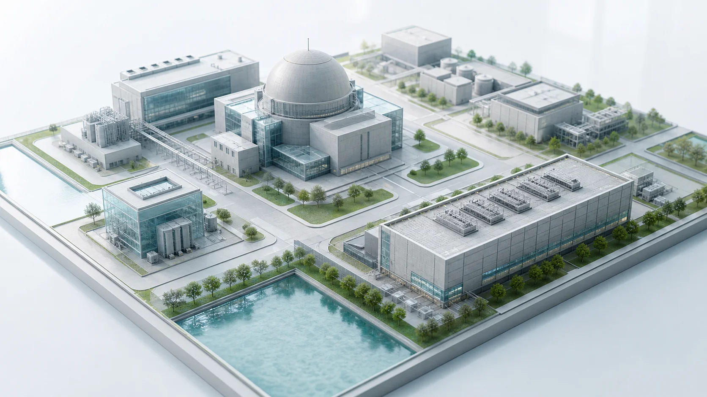
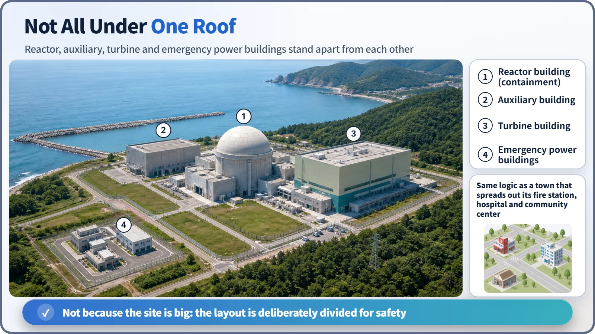
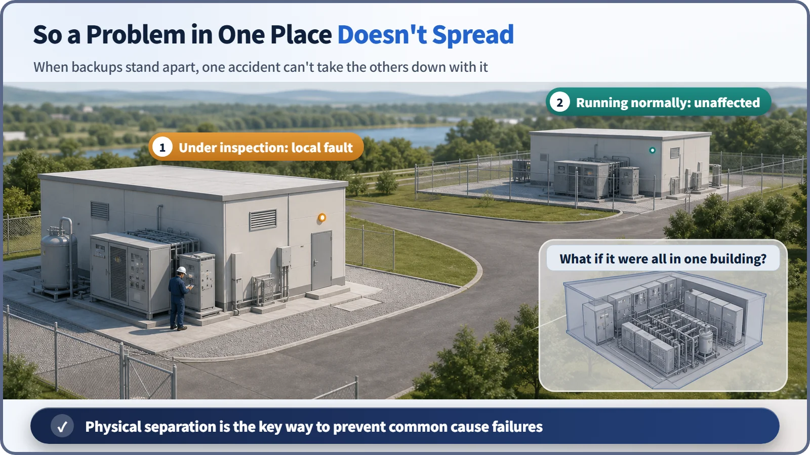

Reactor Components · 075
Why Is a Nuclear Plant Spread Out When You See It From a Drone? — The Safety Logic of Reactor Building Layout
Reactor, auxiliary, turbine and emergency power buildings stand apart by design, so one local event can't disable every backup.

From above, a nuclear plant is not one building but several, set apart on purpose. Backup safety equipment is placed in separate buildings or fire-separated areas so that a single fire or flood cannot knock out every copy at once, a failure mode called common cause failure.
Why a city doesn't put the fire station and the hospital in one building
Think about city planning. Say a town has a fire station, a hospital and a community center. No town would bother to cram all three into one building. Why not? If that one building caught fire, the fire station, the hospital and the community center would all stop working at once. The fire station that should put out the fire and the hospital that should treat the injured would vanish at the same moment: the worst possible situation. So cities deliberately keep these key facilities apart, so that if something happens in one place, the others carry on doing their jobs.
A nuclear plant's building layout follows exactly the same logic. Look again at the plant site on the drone screen. The reactor building (including the containment), which houses the core equipment that handles radioactive material; the auxiliary building, which supports it; the turbine building, which holds the machinery that makes electricity; and the buildings related to emergency power, ready for a loss of electricity, each sit in a different area. This layout didn't just happen because the site was big. It is a design drawn with safety in mind from the very beginning.

Build two of the same equipment, then don't put them in one room
There's one more thing to point out. A nuclear plant's safety equipment usually doesn't come in a single copy. It is duplicated into partners that can stand in for each other, in other words, several trains. It's a bit like providing an elevator so that people can still get up and down when the stairs are out. But what happens if all these stand-in partners are crammed into the same room, the same building? A single accident, a fire or flooding in that room, would knock out at once the very partners that were supposed to cover for each other. The stairs collapse and the elevator stops at the same time. When a single local event disables duplicated equipment all at once like this, it is called a common cause failure.
That's why designers keep backup equipment physically apart from the start. Equipment such as the emergency diesel generators we looked at earlier is split across separate buildings or, within one building, across areas firmly divided by fire walls. Looking at the drone screen again, that's exactly why several emergency power buildings are spread out at a distance from one another. The International Atomic Energy Agency (IAEA) and others require safety systems to have independence (physical separation) along with redundancy (building several copies) and diversity (building them in different ways), and building layout is a key means of securing that independence. (This post describes the principle at concept level, without citing specific clause numbers of the IAEA standards.)

The "isn't it just the site?" misconception
Seeing a plant split into several buildings, it's easy to think, "The site was big, so that's how it turned out." In reality, it's closer to the opposite. Which equipment goes in which building, and how far apart the stand-in partners are placed, is decided from the design stage, taking into account how far a fire could spread, the chance of flooding, and even external threats such as an aircraft crash.
Of course, having separate buildings doesn't by itself mean everything is already perfectly safe. Physical separation is just one piece of the bigger picture of how a plant secures safety in several layers, the piece that "keeps equipment independent of each other." That larger picture is a separate subject worth its own discussion.
Today in four lines
- A nuclear power plant is laid out as several buildings: the reactor building, the auxiliary building, the turbine building, emergency power buildings and more.
- This layout isn't a matter of site conditions. It follows the safety design principle of physically separating backup safety equipment so that one accident can't disable several pieces of equipment at once.
- It's the same logic as a city not cramming its fire station, hospital and community center into one building.
- Separate buildings don't complete safety on their own; they should be understood as one piece of a larger safety concept.
From a single fuel pellet to the pressure vessel, the steam generator, the containment and now the layout of the buildings, we've walked through the parts and structures that make up a reactor inside and out. Seen from above, even the empty space between the buildings turns out to be part of the safety design.